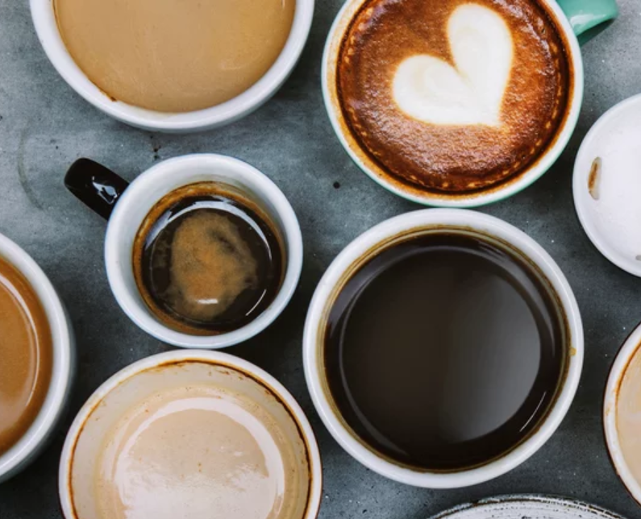
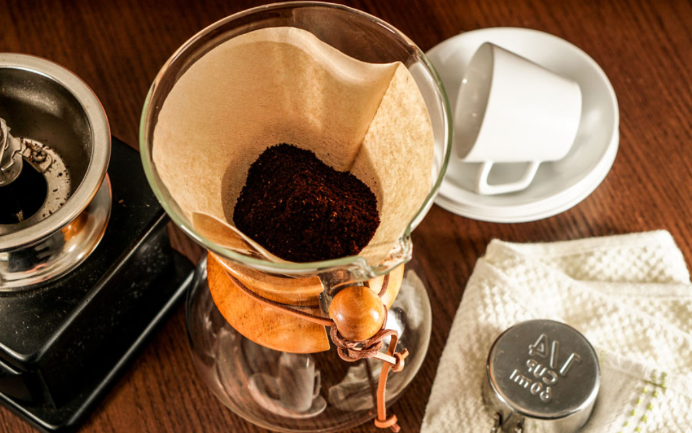

How To Make A coffee
Perfect in the morning, as a midday pick-me-up, or alongside a sweet dessert, there's no bad time for a coffee break!

how to make a coffee without machine
rguably the best method for a delicious, aromatic and complex cup of coffee, the pour-over coffee maker won't disappoint. First, bring cold water to a boil in a kettle. If using whole beans, grind the beans to a uniform consistency similar to granulated table salt. Meanwhile, put a filter in the brewer and rinse with hot water. This removes the papery residue on the filter and warms up the brewer, keeping your coffee hot for longer. Discard the water used for rinsing. Add the grounds to the filter, making sure the surface is level. When the water is between 195°F and 205°F (about a minute after removal from the heat), slowly and steadily pour just enough water over the grounds to saturate them completely, starting from the middle and working your way outward. Stop pouring before the coffee begins to drip through. This is called the "bloom" pour, which allows the coffee to de-gas. Slowly pour in the remaining water, keeping the water in the dripper between half and three-quarters full. This should take 3 to 4 minutes. Carefully remove the filter, then serve and enjoy.